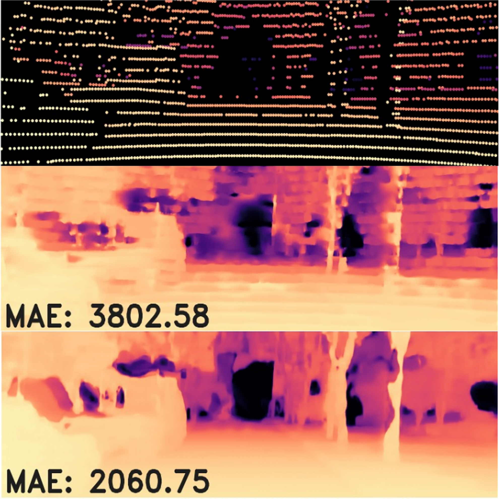
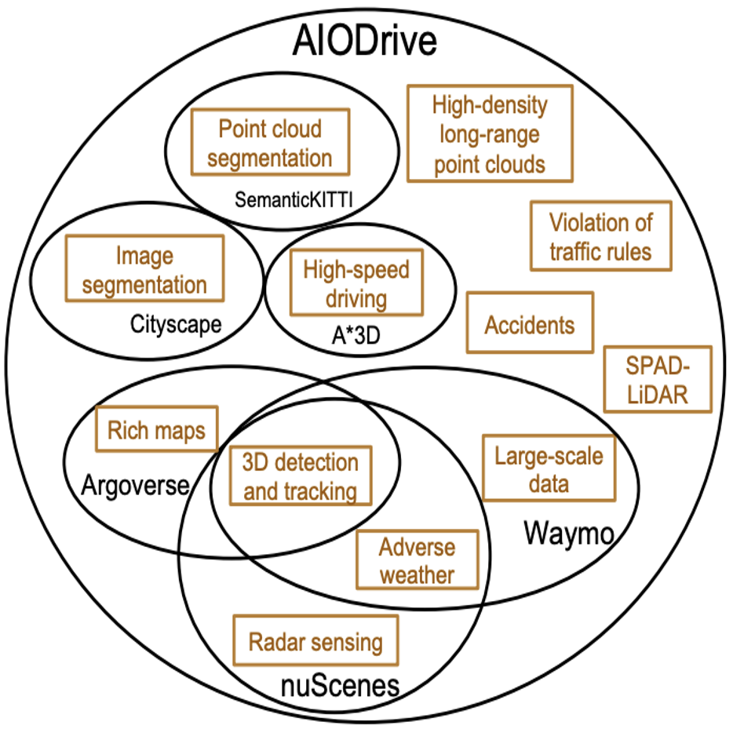

|
Jinhyung (David) Park I am a fourth-year PhD student at CMU's Robotics Institute, advised by Prof. Kris Kitani. I previously received my bachelor's degree in Computer Science at CMU in 2022, also working with Prof. Kris Kitani. I had the opportunity to conduct research at the MSC Lab in UC Berkeley for two summers, advised by Prof. Masayoshi Tomizuka and Dr. Wei Zhan. I previously interned at Meta working on 3D panoptic reconstruction, parametric human body modeling, and promptable mesh recovery. I have also interned at Applied Intuition working on 3D occupancy estimation. |
{kind=link}
ResearchI'm broadly interested in computer vision, joint 2D/3D understanding, human motion modeling, and vision-centric humanoid control. Much of my research focuses on bridging 2D and 3D representations for a cohesive understanding of the world. |
|
|
SAM 3D Body: Robust Full-Body Human Mesh Recovery
Xitong Yang, Devansh Kukreja, Don Pinkus, Anushka Sagar, Taosha Fan, Jinhyung Park, Soyong Shin, Jinkun Cao, Jiawei Liu, Nicolas Ugrinovic, Matt Feiszli, Jitendra Malik, Piotr Dollar, Kris Kitani In Submission, 2025 paper / code / demo / bibtex SAM 3D Body is a promptable full-body mesh recovery model built on MHR that uses 2D keypoint/mask prompts and large-scale data curation for robust body and hand pose estimation in the wild. |

|
MHR: Momentum Human Rig
The Momentum Team arXiv preprint, 2025 paper / code / bibtex MHR is a parametric human body model incorporating ATLAS with a production-ready decoupled skeleton/shape rig, semantic expression blendshapes, and sparse pose correctives for expressive, anatomically plausible animation. |
|
|
ATLAS: Decoupling Skeletal and Shape Parameters for Expressive Parametric Human Modeling
Jinhyung Park, Javier Romero, Shunsuke Saito, Fabian Prada, Takaaki Shiratori, Yichen Xu, Federica Bogo, Shoou-I Yu, Kris Kitani, Rawal Khirodkar ICCV, 2025 paper / bibtex ATLAS is a high-fidelity body model that decouples skeletal and shape parameters, enabling fine-grained body control and more accurate pose fitting. |
|
|
S2GO: Streaming Sparse Gaussian Occupancy Prediction
Jinhyung Park, Yihan Hu, Chensheng Peng, Wenzhao Zheng, Kris Kitani, Wei Zhan In Submission, 2025 paper / bibtex S2GO is a streaming, sparse query-based 3D occupancy framework that decodes queries into semantic Gaussians and uses a denoising rendering objective to capture scene geometry, achieving state-of-the-art accuracy and 5.9x faster inference. |
|
|
Leveraging Temporal Cues for Semi-Supervised Multi-View 3D Object Detection
Jinhyung Park, Navyata Sanghvi, Hiroki Adachi, Yoshihisa Shibata, Shawn Hunt, Shinya Tanaka, Hironobu Fujiyoshi, Kris Kitani CVPR, 2025 paper / bibtex Enforcing temporal consistency and leveraging forward-backward ensembling of temporal models improves semi-supervised learning for camera-based 3D detection. |
|
|
Generalizable Neural Human Renderer
Mana Masuda, Jinhyung Park, Shun Iwase, Rawal Khirodkar, Kris Kitani MIRU (Meeting on Image Recognition and Understanding), 2024 paper / bibtex Novel-view synthesis of drivable human avatars without per-subject optimization. |
|

|
Flexible Depth Completion for Sparse and Varying Point Densities
Jinhyung Park, Yu-Jhe Li, Kris Kitani CVPR, 2024 paper / bibtex Aligning predicted depth maps with observed depth points by propagating depth corrections improves depth completion for sparse and varying input point densities. |
|
|
Azimuth Super-Resolution for FMCW Radar in Autonomous Driving
Yu-Jhe Li, Shawn Hunt, Jinhyung Park, Matthew O'Toole, Kris Kitani CVPR, 2023 paper / code / bibtex Super-resolution of radar using raw ADC signals effectively simulates additional receiver antennas and improves downstream detection performance. |
|
|
Time Will Tell: New Outlooks and A Baseline for Temporal Multi-View 3D
Object Detection
Jinhyung Park*, Chenfeng Xu*, Shijia Yang, Kurt Keutzer, Kris Kitani, Masayoshi Tomizuka, Wei Zhan ICLR, 2023 (Oral Presentation, Top 5% of accepted papers) paper / code / bibtex Combining long-term, low-resolution and short-term, high-resolution matching for temporal stereo yields efficient and performant camera-only 3D detectors. |
|
|
DetMatch: Two Teachers are Better Than One for Joint 2D and 3D
Semi-Supervised Object Detection
Jinhyung Park, Chenfeng Xu, Yiyang Zhou, Masayoshi Tomizuka, Wei Zhan ECCV, 2022 paper / code / bibtex Consistency between 2D and 3D pseudo-labels for joint 2D-3D semi-supervised learning stymies single-modality error propagation and improves performance. |
|
|
Modality-Agnostic Learning for Radar-Lidar Fusion in Vehicle
Detection
Yu-Jhe Li, Jinhyung Park, Matthew O'Toole, Kris Kitani CVPR, 2022 paper / bibtex Multi-modal fusion with prediction consistency between privileged teacher and noisy student alleivates collapse in difficult capture conditions and improves performance in ideal conditions. |

|
Multi-Modality Task Cascade for 3D Object Detection
Jinhyung Park, Xinshuo Weng, Yunze Man, Kris Kitani BMVC, 2021 paper / bibtex Recursive, cascaded fusion of 2D and 3D representations at the task level improves both 2D segmentation and 3D detection quality. |
|
|
Crack Detection and Refinement Via Deep Reinforcement Learning
Jinhyung Park, Yi-Chun Chen, Yu-Jhe Li, Kris Kitani ICIP, 2021 (Best Industry Impact Award) paper / bibtex Second-stage refinement of segmentation masks through an RL agent iteratively completes and cleans predictions. |
|

|
A Large-Scale Comprehensive Perception Dataset with High-Density Long-Range
Point Clouds
Xinshuo Weng, Dazhi Cheng, Yunze Man, Jinhyung Park, Matthew O'Toole, Kris Kitani arXiv, 2021 dataset page / paper / bibtex Large-scale synthetic driving dataset with comprehensive data distribution, sensor suite, and annotations. |
|
|
Protecting User Privacy: Obfuscating Discriminative Spatio-Temporal
Footprints
Jinhyung Park, Erik Seglem, Eric Lin, Andreas Züfle SIGSPATIAL LocalRec Workshop, 2017 paper / bibtex Consideration of entropy-based and adversarial obfuscation of user geolocation trajectories for online identity protection. |
|
|
Real-Time Bayesian Micro-Analysis for Metro Traffic Prediction
Eric Lin, Jinhyung Park, Andreas Züfle SIGSPATIAL UrbanGIS Workshop, 2017 paper / bibtex Metro outflow prediction based on estimated distribution of origin-destination station pairs. |
|
Design and source code from Jon Barron's website |